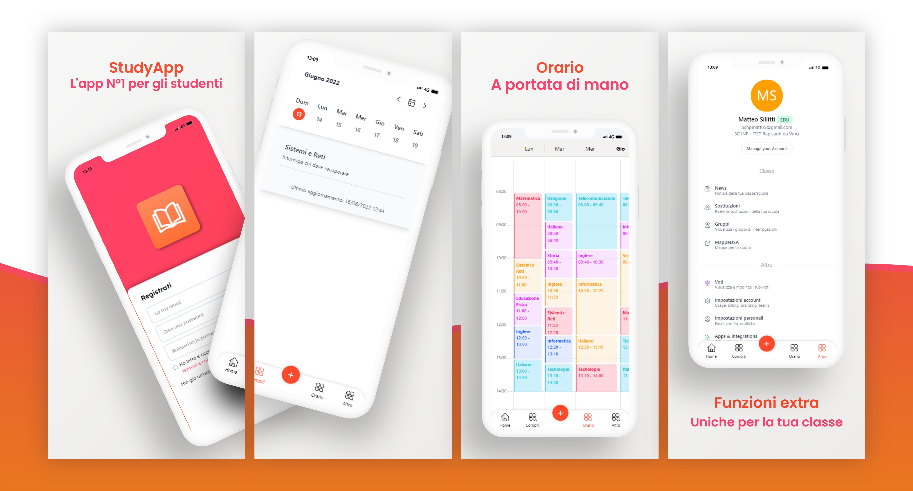

Ciao! Sono Matteo Sillitti.
Sono uno studente, dell'ITET Rapisardi Da Vinci di Caltanissetta e sono al quarto anno di superiori. Fin da bambino mi sono appassionato nell'ambito tecnologico e informatico tant'è che ho iniziato, fin dalle medie a programmare a livello basico nelle tecnologie di sviluppo web. Negli anni successivi, ho approfondito i linguaggi front-end come HTML, CSS e JavaScript e ho iniziato a studiare i linguaggi back-end come PHP e Python, utilizzando framework come Django, Flask e FastApi. Riguardo il periodo scolastico, ho studiato la programmazione in C++ e Java partecipando anche due volte alle OII (Olimpiadi Italiane di Informatica). Attualmente, so utilizzare a livello piuttosto avanzato le tecnologie di sviluppo web come HTML, CSS, JavaScript e frameworks come Bootstrap, TailwindCSS, la suite Firebase e jQuery. A livello intermedio/avanzato, so utilizzare Python per la programmazione back-end di REST API e relativa comunicazione direttamente con Firebase. So anche utilizzare in modo avanzato Arduino con anche la trasmissione di dati via seriale e web. So programmare in modo intermedio anche in C++ e Java ed ho realizzato applicazioni desktop utilizzando Electron e NodeJS. A livello base, invece, so utilizzare PHP per la realizzazione di REST API basiche e Laravel. So anche realizzare interfacce grafiche basiche con Tkinter e Qt in Python. Qualche volta, mi sono trovato a dover utilizzare anche SQLite, per la gestione di alcuni database in alcuni miei progetti. Per quanto riguarda la programmazione mobile, so utilizzare a livello base Flutter per la realizzazione di applicazioni Android e iOS. Infine, per quanto riguarda le competenze linguistiche, so parlare e scrivere in modo intermedio l'inglese ma non ho avuto ancora la possibilità di conseguire una certificazione linguistica.
Esperienze
Tech Dgit Easy
Da molti mesi io e @Paolo collaboriamo con un'azienda di ricerca e sviluppo, dove ci occupiamo di sviluppare applicazioni e gestionali web e mobile. Ci siamo anche occupati della realizzazione di un crawler di strutture Airbnb e Booking per una piattaforma di prenotazione di alloggi. Inoltre, ho avuto modo di imparare a lavorare in team, a gestire il tempo e a risolvere i problemi, mentre in ambito informatico ho potuto approfondire le conoscenze di Python, Laravel, Flutter, MySQL e in generale il web development.
Costruiamo il futuro con STM32
Dopo l'esperienza presso l'STMicroelectronics, io e il mio
compagno @Paolo, ci
siamo convinti a partecipare al concorso Costruiamo il futuro con STM32, superando la prima
fase.
Attualmente stiamo lavorando al progetto proposto, in attesa della seconda fase sperando di
superare anche questa.
ST Talent Days
Durante il periodo di Novembre, ho avuto la fortuna di partecipare ad un corso di 4 giorni presso la STMicroelectronics di Catania, che riguardava l'IoT e l'automazione utilizzando le board STM32 Nucleo. Il corso mi ha permesso di approfondire la mia conoscenza di programmazione e di prototipazione, oltre ad introdurmi al mondo dell'intelligenza artificiale utilizzando TensorFlow e Python per sviluppare un sistema di classificazione di immagini con Deep Learning.
PON STEM Project 4.0
Un PON che mi ha fatto conoscere più a fondo l'utilità di Arduino nel mondo dell'IoT,
dove
abbiamo potuto utilizzare dei moduli WiFi ESP32, oltre a molteplici librerie nuove e il
servizio proprietario Arduino Cloud IoT. Inoltre, abbiamo anche scoperto la stampa sui
PCB.
PON Thinkering Zone
Un PON che mi ha fatto conoscere il mondo della stampa 3D e dove abbiamo programmato dei droni con Python, oltre a montare dei KIT della Lego in collaborazione con Arduino per la realizzazione di veicoli programmabili grazie all'ambiente di sviluppo proprietario di Arduino.
Corso sulla modellazione 3D
Un corso che mi ha fatto conoscere in modo approfondito il mondo della modellazione 3D e di come sia complesso, utilizzando il programma Fusion 360. Durante il corso, abbiamo svolto diverse esercitazioni concludendo con un contest finale.
O.I.I
Ho anche partecipato due volte alle Olimpiadi Italiane di Informatica, che mi hanno permesso di addentrarci ancora di più nel mondo della programmazione con C++ e che mi hanno portato ad affinare le mie capacità di problem-solving, carattere essenziale per saper lavorare al meglio.
I miei progetti
Come sviluppo i miei progetti?
Mi piace molto programmare in team, specialemente insieme a @Paolo,
anche se per molti
progetti preferisco in realtà programmare da solo poiché mi permette di essere più
concentrato e
di
aumentare la mia produttività.
Nella vita ho realizzato diversi progetti, dai più semplici, ai più complessi.
Per esempio, ho realizzato una sito web, che doveva permettere la gestione di un
piccolo server e di visualizzare i servizi attivi tramite PHP. Purtroppo,
ho sospeso
lo sviluppo di questo progetto, per dedicare il mio tempo ad altri anche se
ho l'intenzione di riprenderlo, utilizzado però Python.
Negli ultimi tempi, mi sono specializzato nella realizzazione di
applicazioni web e REST API in Python, PHP e NodeJS utilizzando come database
Firebase
che non richiede alcuna conoscenza di MySQL pur sapendolo utilizzare abbstanza bene.
Vorrei anche realizzare altri progetti, per esempio, un dispositivo Arduino che
permette
il login ai siti web tramite un'autenticazione NFC, il tutto sincronizzato con
l'applicazione
desktop che gestisce i siti web e le impostazioni, realizzata tramite Electron.
StudyApp

La "migliore" applicazione per gli studenti, ancora in fase di sviluppo che
permetterà di sostituire il diario scolastico con un diario digitale che si
aggiornerà da solo senza bisogno
di farlo manualmente.
Quest'app permetterà di sapere in tempo reale i compiti assegnati per casa,
l'orario scolastico e di tenere traccia
dei propri voti.
Il suo funzionamento è molto semplice, dopo che la scuola avrà effettuato la
registrazione all'app,
gli alunni, potranno registrarsi, inserendo la propria scuola e classe ricevendo
in automatico
tutte le informazioni. I compiti e tutte le altre informazioni verranno inserite
da un amministratore
della classe tramite un'interfaccia web.
Reputo questo progetto uno dei migliori che abbia mai realizzato, specialmente
perchè non è necessario
scaricare e installare un'applicazione per usarla (PWA). Tra le tecnologie
utilizzate, troviamo
HTML5, CSS3, JavaScript, jQuery, Bootstrap, Python,
FastAPI e Firebase.
Per maggiori informazioni, contattami
Github: repository privata
Compiti 3C INF
Fin dalla prima superiore, ho iniziato a sviluppare una serie di applicazioni
che permettevano ai miei
compagni di visualizzare l'orario e i compiti della classe. Nella prima
versione, sono partito utilizzando un tool online
che permetteva la realizzazione di applicazioni mobile, non offrendo però una
grafica moderna. Nell'anno a seguire,
ho iniziato a sviluppare la seconda versione, in cui ho utilizzato delle
tecnologie web, che mi hanno permesso di
realizzare una grafica più moderna e che permetteva di visualizzare i compiti in
una forma più semplice.
Nella terza versione, ho sempre utilizzato delle tecnologie web, realizzado però
una PWA che permetteva di visualizzare
l'applicazione senza doverla scaricare. Ho anche realizzato delle REST API in
PHP, che mi hanno permesso di integrare
i compiti in qualsiasi altro progetto, come ad esempio in una skill Alexa, in un
bot Telegram e in un bot Discord.
Tra le tecnologie utilizzate per la terza versione, troviamo HTML5, CSS3,
JavaScript, jQuery, PHP e Firebase.
Per maggiori informazioni, contattami
Github: repository privata
Compiti 3C INF Books
Durante il corso della terza superiore, ho iniziato a sviluppare anche
un'applicazione web (PWA) che permetteva
di visualizzare alcuni libri di testo gratuiti in forma digitale. Questa
applicazione è stata realizzata
utilizzando HTML5, CSS3, JavaScript, jQuery, Bootstrap e
PHP. Ho anche
realizzato un'applicazione desktop
tramite Electron e NodeJS che permetteva leggere i libri in modalità offline.
Per maggiori informazioni, contattami
Github: repository privata
Geometricamente
Sempre in terza superiore, la professoressa di matematica ci ha chiesto di
realizzare un elaborato che riguardava
lo studio delle rette. Ho deciso allora, di realizzare una WebApp contenente
tutte le formule e spiegazioni delle rette
nel piano cartesiano. In questa applicazione, ho utilizzato HTML5, CSS3,
JavaScript, jQuery e Bootstrap.
Per maggiori informazioni, contattami
Github: link
Preview: link
Sistematicamente
Alla fine della terza superiore, ci è stato chiesto di realizzare un elaborato
finale che riassumeva tutto il programma
svolto di sistemi e reti. Ho deciso allora di realizzare un sito web contenente
tutti gli argomenti svolti. Ho utilizzato
HTML5, CSS3, JavaScript e jQuery.
Per maggiori informazioni, contattami
Github: link
Preview: link
Registro Archimede API
Sto realizzando delle REST API che permettono di prendere diverse informazioni
dal nostro registro elettronico (Registro Archimede).
Ho utilizzato Python e FastAPI per la loro realizzazione.
Per maggiori informazioni, contattami
Github: link
Streaming API
Ho realizzato delle REST API in PHP che permettono di renderizzare l'utente nel
sito di streaming desiderato. Di recente le ho riscritte in Python e FastAPI.
Per maggiori informazioni, contattami
Github: link
Preview: link
Tombola Online
Durante il periodo di Natale, ho deciso di modificare un sito web esistente riguardante
una tombola, rendendola online.
Essa permette, di condividere la tombola con altri utenti. Per realizzarla ho
utilizzato HTML5, CSS3, JavaScript, jQuery
e Firebase Realtime Database per sincronizzare tutti i dati tra i client e
server.
Per maggiori informazioni, contattami
Github: link
Telegram Bot
Durante il corso del 2022, ho realizzato diversi bot Telegram in Python.
Su Github sono disponibili i link ai bot realizzati.
Per maggiori informazioni, contattami
Github: link
Discord Bot
Durante il corso del 2021-2022, ho realizzato diversi bot Discord in Python
tramite discord.py.
Su Github sono disponibili i link ai bot realizzati.
Per maggiori informazioni, contattami
Github: link
Github 2: link
Contattami
Se vuoi ricevere maggiori informazioni su un progetto o se vuoi contattarmi, scrivimi per email o tramite social media.
Email: matteomichele.sillitti@gmail.comGithub: @Matt0550
Social Media: link